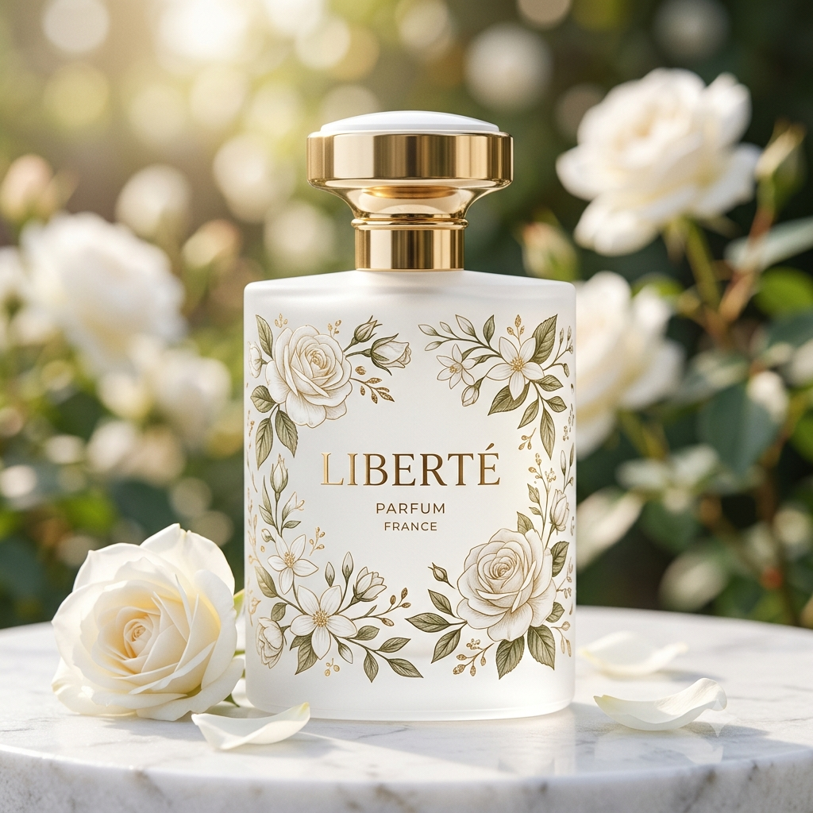
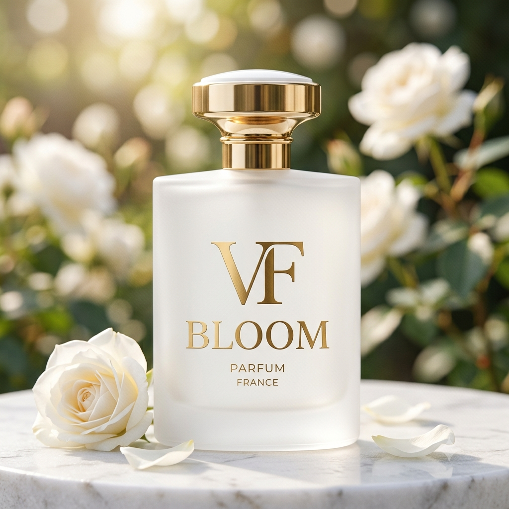

A Wepink é uma marca criada pela Virginia Fonseca.
Ela vende perfumes, body splash, maquiagens e outros produtos.
Perfume marcante e elegante.
Perfume delicado para o dia a dia.
Cheiro leve e refrescante.
Eu gosto dos perfumes da Virginia porque eles têm um cheiro muito bom.
Também gosto dos body splash, pois deixam a pele cheirosa.Os perfumes da Virginia são uma boa opção para quem gosta de perfumes com boa fixação e vários tipos de fragrâncias.
Ketellyn Gabriela – 1º B